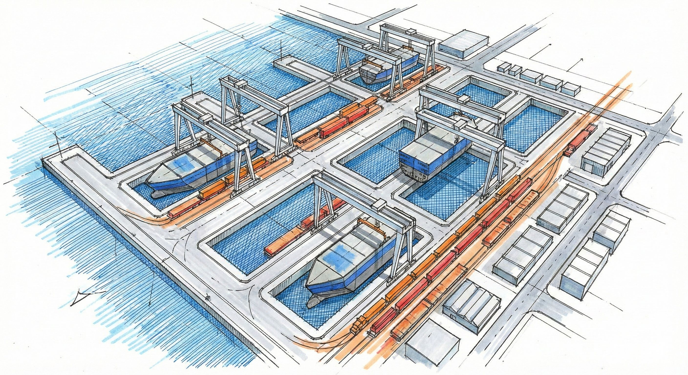

高雄拆船業大事記
1945
戰後初期：高雄港內沈船多，政府鼓勵打撈拆解，奠定拆船工業基礎，初期集中於第三船渠。

1960
1963年起政府標購廢船，1965年停止美援後，政府推出獎勵措施，拆船業迅速擴張。

1968
高雄拆船量躍居世界第一，成為名副其實的「拆船王國」。

1970
拆船工業與鋼鐵、拖船等產業結合，滿足台灣四成鋼鐵需求。拆解所得五金在公園路形成著名「大五金街」。

1975-1978
興建大仁宮拆船專區(1975)與大林拆船專區(1978)，拆船效率極高，一萬噸大船約18天可拆解完成。

1986年8月11日
發生震撼的「大仁宮廢船爆炸事件」，加那利號（Canari）油輪爆炸，釀成16死87傷，導致拆船業盛極轉衰。

1989
大仁宮拆船專區被收回，闢建為第五貨櫃中心，高雄拆船業正式步入歷史，許多業者轉向東南亞發展。

2008
高雄市政府執行「綠八計畫」，拆除公園路五金街，僅剩部分店家遷往它處。